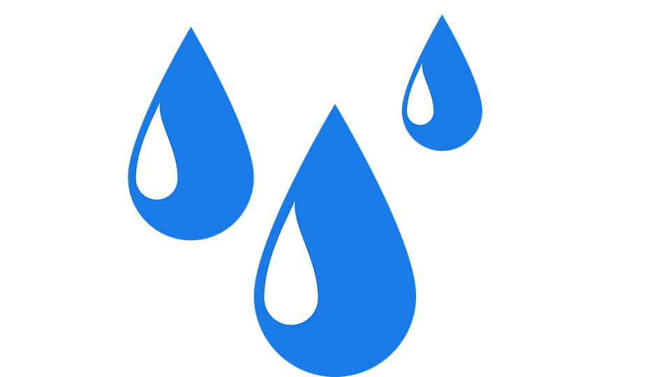

<ion-header>
  <ion-navbar>
    <button ion-button menuToggle>
      <ion-icon name="menu"></ion-icon>
    </button>
    <ion-title>Monitoramento</ion-title>
  </ion-navbar>
</ion-header>

<ion-content padding class = "bg">
  <div class = "img">
    
  </div>
  <div class="start-button">
    <button ion-button round large block outline icon-start (click)="startMonitor()">
      <ion-icon name="checkmark-circle-outline"></ion-icon>
        Iniciar
    </button>
  </div>
  <footer class="footer">
    Version 1.0
  </footer>
</ion-content>
